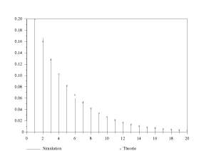

http://www.saphir-control.fr/

| http://www.saphir-control.fr/
|
http://gams.nist.gov qui est le
Guide to Available Mathematical Software et http://www.netlib.org,
le classique Netlib Repository. geom qui effectue
m*n tirages aléatoires selon une loi
géométrique de paramètre p et stocke les
résultats dans un tableau d'entiers y de taille
m x n. Savoir ce que fait exactement
geom n'est pas vraiment utile pour nous ici. Disons simplement
que, étant donnés les entiers m et n et
le paramètre p cette fonction retourne le tableau
y. Voilà le code de geom (qui est fort
simple), la seule chose importante ici étant sa liste d'appel :
static int geom(int m,int n,double p,int y[])
{
int i;
if ( p >= 1.0 )
{
cerro("p doit-etre < 1 "); return 1;
}
for (i = 0 ; i < m*n ; i++)
{
double z = drand48();
y[i] = 1;
while ( z < 1-p ) { z = drand48(); y[i] ++; }
}
return 0;
}
Je souhaite donc rajouter dans Scilab une fonction (une
<<primitive>>) de même nom geom dont la syntaxe
d'appel est y=geom(m,n,p). La fonction geom est
supposée effectuer m*n tirages de loi
géométrique et renvoyer le résultat sous la forme d'une
matrice Scilab de taille m x n. geom. Nous appellerons
intgeom l'interface pour la fonction geom (il faut
écrire une interface pour chaque fonction que l'on veut interfacer).SCI/examples/addinter-examples/. SCI/examples/addinter-tutorial/ donne aussi
un exemple très simple d'interface, destinée aux utilisateurs
débutants, proche de celle décrite dans cet article. On pourra
trouver dans le répertoire SCI/examples/, d'autres
méthodes d'interfacage (voir les sous répertoires
link-examples, mex-examples et
intersci-examples).CheckRhs,
CheckLhs, GetRhsVar et CreateVar), des
variables de la librairie d'interfaçage (LhsVar) et des
fonctions internes Scilab (cerro, aussi utilisée dans
geom). Pour utiliser les fonctions et les variables
précédentes, il faut rajouter le fichier d'en-tête
stack-c.h dans le fichier intgeom.c.geom s'écrit alors de la
façon suivante :#include "stack-c.h" static int geom(int m, int n, double p, int y[]); int intgeom(char *fname) int l1, m1, n1, l2, m2, n2, m3, n3, l3; int minlhs=1, maxlhs=1, minrhs=3, maxrhs=3; int m,n,ly; double p; CheckRhs(minrhs,maxrhs);¬ (1) CheckLhs(minlhs,maxlhs) ; GetRhsVar(1,"i", &m1, &n1, &l1); ¬ (2) GetRhsVar(2, "i",&m2,&n2,&l2); GetRhsVar(3,"d", &m3, &n3,&l3); if (m1*n1 !=1 || m2*n2 !=1 || m3*n3!=1) cerro("Erreur: les arguments de geom doivent etre scalaires"); return 0; m=*istk(l1); n=*istk(l2) ; p=*stk(l3); ¬ (3) CreateVar(4,"i",&m,&n,&ly); ¬ (4) if ( geom(m,n,p,istk(ly))==1 ) return 0; LhsVar(1)=4; ¬ (5) return 0; A première vue, cette fonction peut paraitre un peu compliquée. En fait on ne va pas taper tout ce code, mais plutôt partir d'un exemple tout fait qu'on va adapter à notre cas. Puisque tous les programmes d'interface sont batis sur le même moule, les modifications à faire sont très faciles à réaliser avec quelques retouches à l'éditeur. L'interface précédente pourrait par exemple être utilisée presque telle quelle pour n'importe quelle fonction C qui aurait une liste d'appel semblable à celle de
geom.
Comment cette interface marche-t-elle ? Quand sous l'interprète Scilab,
je tape la commande y=geom(m,n,p), les arguments sont
évalués et leurs valeurs sont stockées dans un tableau
(que l'on appellera pile d'appel) dans l'ordre où ils apparaissent dans
la liste d'appel. D'autre part le nombre d'arguments de retour attendus (ici
y) est connu. La fonction d'interfaçage
intgeom doit tout d'abord contrôler que le nombre
d'arguments transmis et attendus au retour sont corrects. Cela est fait en
utilisant CheckLhs et CheckRhs qui effectuent un
return si la contrainte qu'ils vérifient est non
vérifiée (cela est vrai pour toutes les autres fonctions
d'interfaçage que nous verrons). Voir (1). Dans l'interface, chaque
variable Scilab est repérée par un numéro. Ici par
exemple, la fonction Scilab étant y=geom(m,n,p), les
variables d'entrée m,n,p ont les numéros 1,2,3.GetRhsVar(2, "i", &m2, &n2, &l2);a pour effet de vérifier que le deuxième argument de la liste d'appel est bien de type entier (
"i"), (une conversion
des données en entiers est faite) et de renvoyer dans m2 et
n2 les dimensions de la matrice et dans l2 une
adresse pour accéder aux données. istk(l2). Le deuxième argument de
geom qui doit être un entier est donc finalement
récupéré dans l'interface par n=*istk(l2).
Voir (3).m2*n2 vaut bien
1 car une utilisation de n=*istk(l2) dans un appel
y=geom(10,[],2.5) donneraît n'importe quoi. Le
troisième argument est de type double ("d") et on
y accède par p=*stk(l3). De manière
générale, disposant des dimensions des arguments, on doit
effectuer des vérifications et en cas d'erreur on peut utiliser la
fonction cerro pour afficher un message puis faire un
return (Scilab prend alors le relais). On notera d'ailleurs que
dans la fonction geom, j'ai aussi utilisé la fonction
cerro pour imprimer un message d'erreur.geom, il faut créer une
variable (réserver de la place) pour stocker le résultat
y. On utilise la position 4 qui est la
première position libre après les variables d'entrée. La
variable y doit être une matrice d'entiers de taille
m×n et la fonction geom veut un
pointeur d'entiers. La commande (4) :
CreateVar(4,"i",&m,&n,&ly) se charge de
créer dans la pile d'appel un nouvel objet Scilab avec le numéro
4 (une matrice m×n) et à
nouveau on obtient une adresse pour accéder aux données
ly (les données sont entières et sont donc
accessibles via istk(ly))CreateVar est la même que celle de
GetRhsVar sauf que les 4 premiers arguments sont des
entrées et le dernier une sortie calculée par
CreateVar. Après l'appel de geom, il ne reste
plus qu'à renvoyer à Scilab le résultat. Voir (5). Le
nombre de variables attendues par Scilab à déjà
été contrôlé au début de l'interface
(CheckRhs) et il ne reste plus qu'à indiquer par
l'intermédiaire de LhsVar(i)=j les positions des variables
que l'on veut renvoyer : l'instruction LhsVar(1)=4 signifie
<<la première variable de sortie est la variable numéro
4>>. C'est Scilab qui contrôle alors tout seul d'éventuelles
conversions de données à effectuer. SCI/examples/addinter-examples pour une description aux travers
d'exemples de toutes les possibilités de la librairie. La connaissance
des 4 fonctions décrites ici, (CheckLhs,
CheckRhs, GetRhsVar, CreateVar) permet
d'interfacer la plupart des fonctions C. Dans le répertoire SCI/examples/addinter-examples on montre en particulier comment
interfacer une fonction C qui a elle-même une fonction comme
paramètre d'entrée, ou comment on peut appeler
l'interprète Scilab à l'intérieur d'une interface. C'est
évidemment un peu plus compliqué, mais des exemples simples sont
donnés pour réaliser ce type d'interface.mexfiles Matlab pourront se
reporter au répertoire SCI/examples/mex-examples pour
constater que leurs fichiers mex (librairie d'interfaçage
de Matlab) marchent quasiment tels quels dans Scilab. geom et intgeom) dans mon répertoire courant.
Il me faut maintenant charger ces codes dans Scilab pour définir la
primitive Scilab geom. .so) et indiquer le nom Scilab (qu'on
suppose être aussi geom) que l'on veut donner à la
fonction dont le code est interfacé par intgeom. libalea qui ne contient pour l'instant que
geom et son interface intgeom (sachant que je pourrai
ensuite enrichir ma librairie en rajoutant d'autres fonctions). addinter-linuxmag chez moi et
je copie le fichier SCI/examples/addinter-tutorial/Makefile
dedans. Je l'adapte à mon nouvel interface comme suit (la lecture du
petit fichier README s'impose) :SHELL = /bin/sh SCIDIR = /usr/lib/scilab-2.5 LIBRARY = libalea.a OTHERLIBS = ############################################ # To each .o interface (C or Fortran) associate one scilab function # CINTERFACES = intgeom.o CFUNCTIONS = geom OTHERCOBJS = ......Je ne reproduis ici que les lignes que j'ai changées. La variable
SCIDIR doit contenir le nom du repertoire Scilab. La commande
LIBRARY=libalea.a nomme ma lirairie d'interfaces. La variable
OTHERLIBS permet d'indiquer d'autres librairies
nécessaires à l'exécution du code de l'interface. On
notera par exemple que geom utilise la fonction
drand48 de la librairie mathématique -lm. On
pourrait être tenté de rajouter cette librairie dans
OTHERLIBS. Cela marcherait mais c'est en fait inutile pour
drand48 car cette fonction est déjà
référencée dans Scilab. CINTERFACES doit contenir la liste des noms des
fichiers C qui contiennent des interfaces. On notera que cette liste doit aussi
donner la liste des interfaces et qu'on aura donc intérêt à
créer un fichier par interface portant le même nom que
l'interface. CFUNCTIONS contient la liste des noms des fonctions
Scilab interfacées. Par exemple la lecture du Makefile
précédent indique que la fonction Scilab geom est
interfacée par l'interface intgeom. OTHERCOBJS contient la liste d'éventuels
autres fichiers objets nécessaires pour la réalisation de
l'interface. intgeom.c dans le même répertoire et en
réponse à la commande Linux make j'obtiens
lee% make
rm -f libalea.sce libalea_gateway.c
Creation of libalea.a
-- Generating the C function libalea_gateway.c
cc -g -I/s/scilab/routines -c libalea_gateway.c -o libalea_gateway.o
-- Generating the Scilab script libalea.sce
------------------------------------------
To load geom
functions, at Scilab prompt, enter:
-->exec libalea.sce
------------------------------------------
Le make a créé pour moi les deux fichiers
libalea.sce et libalea_gateway.c et a compilé
les fichiers sources. On suppose bien sûr que le compilateur C
gcc existe. Le chargement du code objet dans Scilab se fait en
lançant le script libalea.sce comme indiqué par le
make. geom avec le
petit script qui suit. On compare graphiquement (Figure 1) l'histogramme empirique obtenu par simulation et celui
donnée par la théorie
exec libalea.sce // chargement de la librairie dynamique
n=10000; pr=0.2
y=geom(1,n,pr); // appel de la nouvelle primitive
N=20; i=0:N;
// tests des resultats
z=[]; for i1=i, z=[z,size(find(y==i1),'*')];end
plot2d3("onn",i',z'/n,[1,3],"161","Simulation");
zt=[0];for i1=1:N; zt=[zt,pr*(1-pr)^(i1-1)];end
plot2d1("onn",i',zt',[-2,6],"100","Theorie");

addinter-tutorial. On peut construire une interface
à la main. Les étapes sont alors les suivantes, il faut
écrire une fonction de gestion de l'interface (la méthode
précédente nous a fourni un exemple dans
libalea_gateway.c), puis, après compilation, charger le
code dans Scilab au moyen de la commande addinter. Il est par
exemple facile de modifier addinter-tutorial pour utiliser
libtool plutôt que de laisser Scilab (par
l'intermédiaire de addinter) construire une librairie
partagée. link et call. Dans une première étape,
je compile ma fonction C, geom, avec par exemple la commande
make geom.o. Une contrainte m'est imposée, je dois modifier
ma fonction C pour que sa liste d'appel ne contienne que des pointeurs. #include <stdlib.h> int geom(int *m, int *n, double *p, int y[])Je charge alors dynamiquement cette fonction dans Scilab avec la commande
-->link("geom.o","geom","C")
Cette instruction signifie : charger le fichier objet geom.o
qui contient le point d'entrée geom et du code C. Je peux
alors appeler la fonction C geom depuis Scilab et obtenir sa
sortie comme une variable Scilab. Je dois donc envoyer à
geom les paramètres d'entrée m,n et
p et récupérer la matrice de sortie y.
C'est la commande call qui permet de faire cet appel. La syntaxe
est un peu longue car je dois fournir les valeurs des variables
d'entrées, mais aussi leur type C et leur position dans la liste d'appel
de geom. Cela donne par exemple :
-->m=3;n=4;p=0.3;
-->y=call("geom",m,1,"i",n,2,"i",p,3,"d","out",[m,n],4,"i");
Dans cette dernière instruction, on indique en premier argument le nom
de la fonction C appelée (c'est aussi le point d'entrée
passé à link), puis entre geom et la
chaine out, l'information relative aux variables d'entrée
et, après la chaine out, l'information relative aux
variables de sortie. À chaque variable est associé un triplet de
paramètres. On interprète par exemple les trois paramètres
m,1,"i" comme : passer la valeur m
comme premier argument de geom de type int. En
sortie, on aura : y (premier argument à gauche du
signe égal) est une matrice de dimension [m,n],
4ième paramètre de geom, de type int.
Évidemment, on peut encapsuler l'instruction call(...) dans
une fonction Scilab y=geom(m,n,p) et en profiter pour faire des
tests (par exemple de dimensions) sur les arguments passés à
notre fonction C.ode,
fsolve ou optim admettent des arguments de type
fonction. Par exemple pour chercher les zéros de la fonction
cos(x)*x
2-1, il faut construire une fonction Scilab function [y]=f(x) y=cos(x)*x^2-1et utiliser ensuite cette fonction
f comme argument de la fonction
fsolve :
-->y0=10; y=fsolve(y0,f)On peut parfois avoir envie de coder la fonction dont on cherche le zéro dans un autre langage que Scilab. Dans ce cas, il ne faut pas vraiment écrire une interface, car la fonction
fsolve a
déjà été prévue pour fonctionner avec des
fonctions fexterne. fsolve nous impose par contre une
contrainte sur la liste d'appel de la fonction f qu'elle peut
reconnaître (voir le help de fsolve). L'exemple
précédent pourrait être codé en C sous la
forme :
void f(int *n,double *x,double *fval,int *iflag)
{
*fval = cos(*x)*(*x)*(*x) - 1;
}
Pour charger la fonction f définie en C dans Scilab on
utilise la commande link :
-->link("f.o","f","C");
et on indique à fsolve que le problème à
résoudre concerne la fonction f écrite en C en lui
passant en argument la chaîne "f" :-->y0=10; y=fsolve(y0,"f")Cela est valable pour la plupart des primitives Scilab admettant des argument fonctionnels.
Scilab@inria.fr http://www-rocq.inria.fr/scilab/
This document was translated from LATEX by HEVEA.